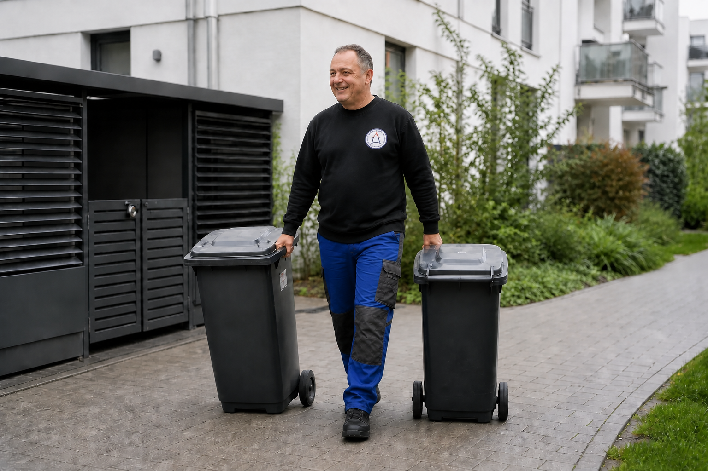

← Zurück zu den Leistungen
HMZ Leistung
Mülltonnen- & Bereitstellservice
Zuverlässige Bereitstellung und Rückholung von Mülltonnen zu den vereinbarten Abfuhrterminen.

Unsere Leistungen
- Termingerechte Bereitstellung der Mülltonnen
- Rückholung nach erfolgter Leerung
- Service für Wohnanlagen, Gewerbeobjekte und private Immobilien
- Berücksichtigung der örtlichen Abfuhrtermine
- Kontrolle der vereinbarten Stellplätze
- Individuell abgestimmter Leistungsrhythmus
Wir bringen die vereinbarten Behälter rechtzeitig zum Abholplatz und stellen sie nach der Leerung wieder an ihren vorgesehenen Platz zurück. So bleibt die regelmäßige Abfallentsorgung zuverlässig organisiert – auch bei Urlaub, Leerstand oder größeren Wohnanlagen.
Interesse an dieser Leistung?
Rufen Sie uns an unter 03304 250784 (ggf. KI-Assistent) oder nutzen Sie unser Kontaktformular.